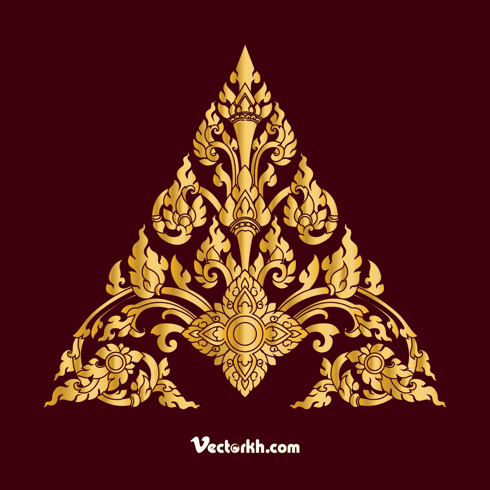
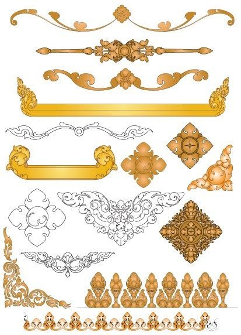

Kbach (Khmer: ក្បាច់) are traditional decorative elements of Cambodian architecture. While 'kbach' may refer to any sort of art-form style in the Khmer language, such as a gesture in Khmer classical dance, kbach rachana specifically refers to decorative ornament motifs. Kbach are also used in decorating of Cambodian silver crafts, furniture, regalia, murals, pottery, ceramics, stone carving etc.
 Generally all Kbachs shapes refer to natural elements. Here are some examples of the most famous ones:
- The frontal lotus petal shape.
- The Lotus petal seen from the side shape.
- The Ficus religiosa leaf shape.
- The Chan flower shape.
- The spiral snail shell shape.
- The mythical goose tail shape.
- The flame shape.
- The Phni Tes shape etc.
These standard basic shapes are internally divided into more complex ornaments using one of the styles of division characteristic for a specific school of kbach.
As kbach is an oral tradition, passed down through learning and making, there is considerable variety of ways to create an undisputed system of kbach schools. The four major schools recognized by contemporary kbach artists are: kbach angkor, kbach phñi tes, kbach phñi voa and kbach phñi phleung.
- kbach angkor (ក្បាច់អង្គរ) - the 'Angkorian style'; a vaguely defined style, though the common elements include snail-like curls called kbach hien (snails), kbach trabak chuk (lotus petals), etc.
- kbach phñi tes (ក្បាច់ភ្ញីទេស) - the 'exotic intertwining style'; a style which utilizes poppy flowers, buds, leaves, and pods; it somewhat resembles the acanthus of Western ornamentation
- kbach phñi voal (ក្បាច់ភ្ញីវល្ល) - the 'intertwining vine style' with animal heads and intertwining vines protruding from their mouths
- kbach phñi phleung (ក្បាច់ភ្ញីភ្លើង) - the 'intertwining flame style' which uses abstract flames in the shape of hamsa tails in an intertwining form